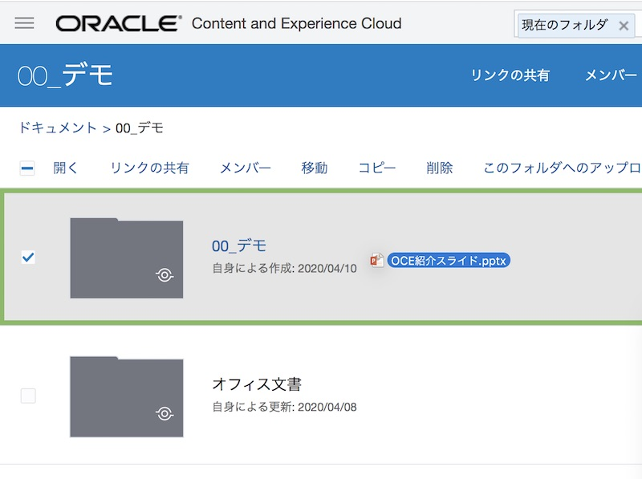
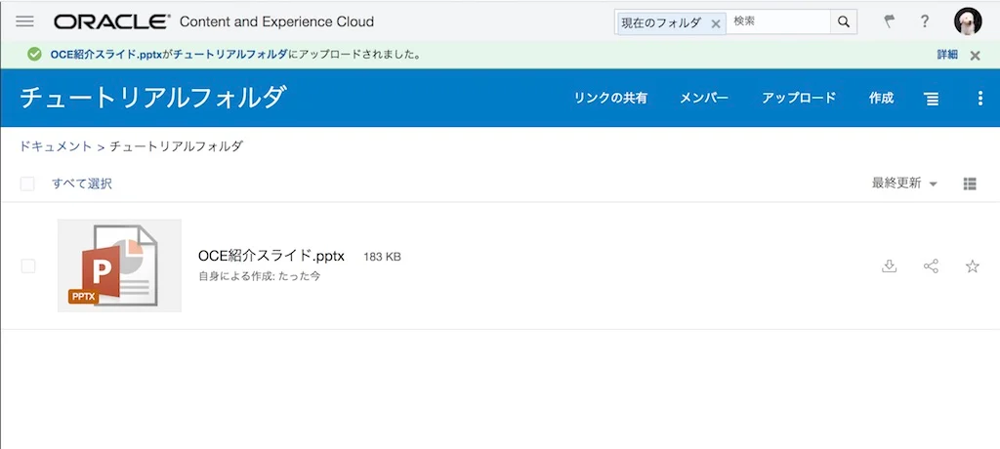
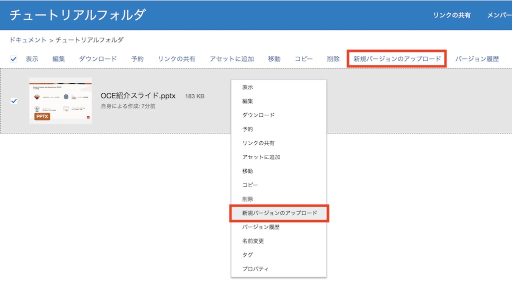
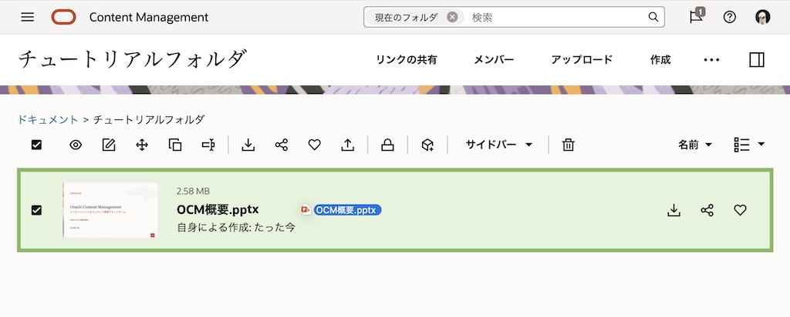
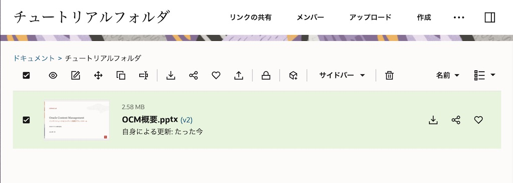
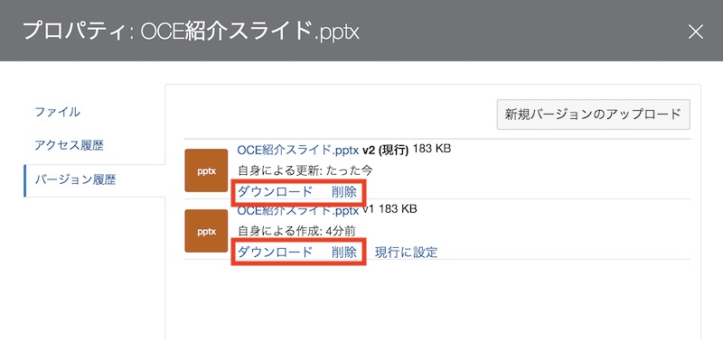

目次に戻る: Oracle Content and Experience のファイル共有機能を使ってみよう【初級編】
ローカル環境から、クラウド上の OCE にファイルを登録する方法は複数あります。ここでは、Web ブラウザを利用したファイルのアップロード方法について説明します。ファイルのアップロードはバックグラウンドで実行されるので、アップロード中に別の作業を続けることができます。なお、ファイルをアップロードする際は、以下について注意してください
-
ファイルのアップロードを5GBまでに抑えます。一部の Web ブラウザではそれより大きいファイルを処理できないことがあります。数GBを超える大きいファイルを追加する場合は、デスクトップ・アプリケーションの利用を検討してください
-
複数のファイルやフォルダを含むフォルダ全体を追加するには、デスクトップ・アプリケーションを利用してください。同期フォルダにフォルダを追加することで、フォルダを含むコンテンツがクラウド上の OCE に追加されます
-
サービス管理者が、アップロードできるファイルの種類（拡張子および最大ファイルサイズ）を制限している場合があります。制限されているファイルの種類を確認するには、右上のユーザー・アイコン→プリファレンス→ドキュメントを開いてください
-
アップロードの取り消しは、ファイルのアップロード中に画面の上部の情報バーで「詳細」リンクをクリックし、 取り消すファイルの「X」をクリックします
この文書は、2020年5月時点での最新バージョン(20.2.2)を元に作成されてます
前提条件
- Oracle Content and Experience インスタンスを作成する
- OCE の利用ユーザーに OCE インスタンスの CECStandardUser もしくは CECEnterpriseUser アプリケーション・ロールが付与されていること
1. 新規ファイルを登録する
1.1 新規ファイルの登録
-
フォルダに新規ファイルをアップロードする方法は以下の通りです
-
アップロード先のフォルダを開き、「アップロード」 をクリックし、ローカル環境上のファイルを選択する

-
アップロード先のフォルダを開き、アップロードするファイルをドラッグ＆ドロップする（アップロード先がハイライト表示されます）

-
アップロードするファイルを、アップロード先のフォルダに直接ドラッグ＆ドロップする（アップロード先のフォルダがハイライト表示されます）

-
-
ファイルがアップロードされたことを確認します

1.2 新しいバージョンのファイルを登録する
OCE にアップロードしたファイルの修正版を登録するときに、古いバージョンのファイルを残したまま、修正版のファイルを新しいバージョンのファイルとして登録することができます。
OCE で管理されるファイルのバージョンは、v1→v2→v3→v4→…と上がっていきます。
なお、システム管理者により、ファイルあたりの保持される最大バージョン数が制限されている場合があります。制限されている場合の動作は以下の通りです
-
最新バージョンから「ファイル当たりのバージョンの最大数」で指定されたバージョン数のみ保管
-
それ以下の古いバージョンは、バッチ処理にて定期的に削除（ごみ箱に移動）
（例）
サービス管理者によりバージョンの最大数が「5」に制限されている状態で、あるファイルが10バージョン登録されている（v10～v1）
→ v10, v9, v8, v7, v6 の5バージョンは保持
→ v5, v4, v3, v2. v1 はバッチ処理により削除
-
ファイルの新規バージョンを登録する方法は以下の通りです
-
ファイルを選択し、「新規バージョンのアップロード」 をクリックする
-
ファイルの右クリックメニューから 「新規バージョンのアップロード」 をクリックする

-
新規バージョンとして登録するファイルを、アップロード先のファイルに直接ドラッグ＆ドロップする

-
ファイルのプロパティより 「バージョン履歴」 を選択し、「新規バージョンのアップロード」 をクリックする

-
-
ファイルの新規バージョン（ここでは v2）が登録されることを確認します

1.3 ファイルのバージョン管理
バージョン管理されたファイルに対する操作を説明します
-
ファイルのバージョン単位で、削除やダウンロードができます

[Memo]
古いバージョンのファイルを削除すると、そのバージョンのファイルのみが 「ごみ箱」 に移動されます -
古いバージョンのファイルを新規バージョンとして再登録する場合は、「現行に設定」 をクリックします。ここでは v1 のファイルの 「現行に設定」 をクリックします

-
古いバージョンのファイル（ここでは v1）が、新規バージョンの v3 として登録されます

1.4 ファイルの操作メニュー
ファイルの操作メニュー及びアイコンについて説明します

| メニュー・アイコン | 説明 |
|---|---|
| 表示 | ファイルのプレビューを表示します |
| 編集 | ファイルを編集します。ローカル環境にデスクトップ・アプリケーション及びファイルを編集可能なOffice アプリケーションがインストール及び構成されている必要があります |
| ダウンロード | ファイルをダウンロードします |
| 予約/予約のクリア | ファイルを予約します。予約すると、ファイルに鍵マークのアイコンが表示され、他のユーザーにそのファイルを使用していることが表示されます。以下の操作により予約は解消されます （１）ファイルを予約したユーザーによる「予約のクリア」もしくは「新規バージョンファイルのアップロード」、 （２）他のユーザーによる「予約のクリア」の実行。この場合、予約ユーザーに対して予約をクリアしたユーザーとその時間がメールで通知されます |
| リンクの共有 | ファイルの共有リンクを作成します |
| アセットに追加 | ファイルを指定したアセット・リポジトリに追加します（サービス管理者により CECEnterpriseUser アプリケーションロールが付与されたユーザーのみ表示） |
| 移動 | ファイルを別のフォルダ配下に移動します |
| コピー | ファイルを別のフォルダ配下にコピー（複製）します |
| 削除 | ファイルを削除します。削除されたファイルはごみ箱に移動されます |
| 新規バージョンのアップロード | ファイルの新規バージョンをアップロードします |
| バージョン履歴 | ファイルのバージョン履歴を表示します |
| 名前変更 | ファイルの名前を変更します |
| タグ | ファイルにタグを設定・削除します |
| プロパティ | ファイルのプロパティを開きます。プロパティより、名前や説明の変更、バージョン履歴やアクセス履歴を参照できます |
| ファイル紐付けの会話が存在する場合に表示されます。クリックすると、ファイルのプレビューおよびファイルに紐付けられた会話が、1つの画面上で表示されます | |
| ファイルをダウンロードします（※ダウンロードメニューと同じ） | |
| ファイルの共有リンクを作成します（※リンクの共有メニューと同じ） | |
| クリックすると、ファイルがお気に入りとしてマークされます。お気に入りを解除する場合は、このアイコンをもう一度クリックします。お気に入りに設定されたファイルは、ドキュメント・ホーム→お気に入りよりアクセスできます | |
| 自分もしくは他のユーザーによりファイルが予約されていることを表します |
以上でこのチュートリアルは終了です。